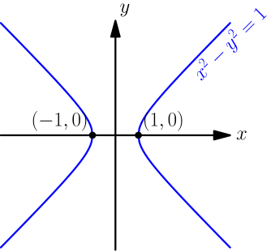
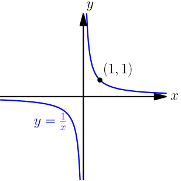
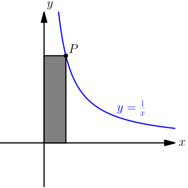
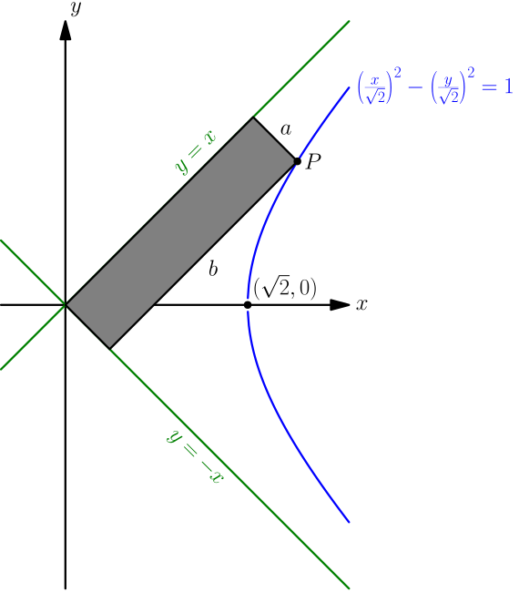

Why is y=1/x a hyperbola?¶
On this site, a hyperbola means anything that we can get from the curve $x^2-y^2 = 1$ by shifting, stretching and rotating it.

However, if someone says the word "hyperbola", the first thing that comes to my mind is $y=\frac{1}{x}$.

These two curves look similar, and it looks like $y=\frac{1}{x}$ could be something that we can get from $x^2-y^2=1$ by stretching and rotating; that is, it could be a hyperbola. Next we'll prove that it really is a hyperbola. We only show this for the "right halves" of these curves, because the other halves are similar.
We start by rewriting $y=\frac{1}{x}$ as $xy=1$. Consider any point $P$ and the area of a rectangle like in the following picture:

The area of the rectangle is width times height; that is, $P_xP_y$. The equation $xy=1$ means that this area is $1$, no matter which point on $y=\frac{1}{x}$ we choose.
Our goal is to find a hyperbola that also gives $1$ for similar rectangle areas. We choose the hyperbola $$ \left(\frac{x}{\sqrt{2}}\right)^2 - \left(\frac{y}{\sqrt{2}}\right)^2 = 1. $$ Let $P=(P_x,P_y)$ be any point on the hyperbola. We also draw the two lines $y=x$ and $y=-x$. These lines are perpendicular (the product of their slopes is $-1$), so we can use them for drawing the rectangle.

We write the equations of the lines as $$ 1x+(-1)y+0=0 \qquad \text{and} \qquad 1x+1y+0=0. $$ Now we can use the formula for distance between line and point, and we get $$ \begin{align} a &= \frac{|1P_x + (-1)P_y + 0|}{\sqrt{1^2 + (-1)^2}} = \frac{|P_x-P_y|}{\sqrt{2}}, \\ b &= \frac{|1P_x + 1P_y + 0|}{\sqrt{1^2 + 1^2}} = \frac{|P_x+P_y|}{\sqrt{2}}. \end{align} $$ This means that the area is $$ ab = \frac{|(P_x-P_y)(P_x+P_y)|}{\sqrt{2}\sqrt{2}} = \frac{|P_x^2-P_y^2|}{2}. $$ Because $P$ is on the hyperbola, it must satisfy the equation of the hyperbola: $$ \begin{align} \left(\frac{P_x}{\sqrt{2}}\right)^2 - \left(\frac{P_y}{\sqrt{2}}\right)^2 &= 1 \\ \frac{P_x^2}{2} - \frac{P_y^2}{2} &= 1 \\ P_x^2 - P_y^2 &= 2 \\ \end{align} $$ Plugging this in, we get $$ ab = \frac{|2|}{2} = 1. $$
So, the area of the rectangle is $1$ for any point $P$ on the "right half" of the hyperbola. This means that the "right half" of the hyperbola must be just like the "right half" of $y=\frac{1}{x}$, but rotated, so $y=\frac{1}{x}$ is a hyperbola.